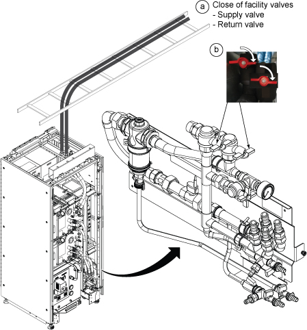
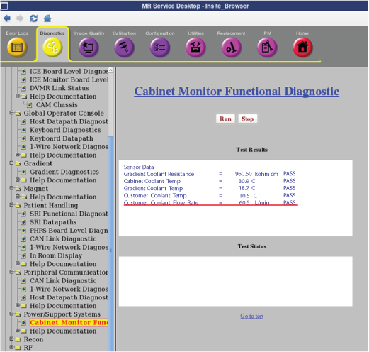
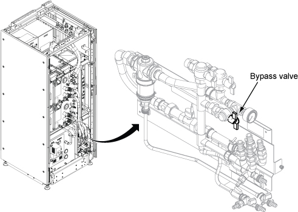
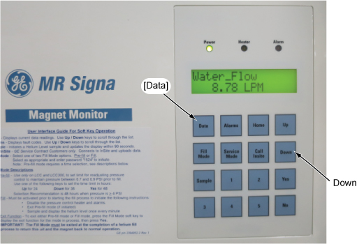
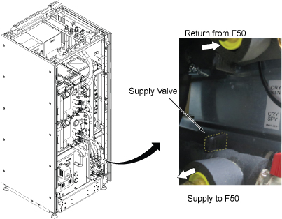
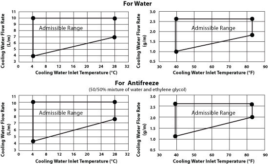

- 00000018WIA306CB230GYZ
- id_156672361.9
- Jul 13, 2021 8:27:36 PM
FPU Sensor Replacement
Prerequisites
| Required persons | Preliminary requirements | Procedure | Finalization |
|---|---|---|---|
| 1 | Not Applicable | 60 minutes | 15 minutes |
| Item | Quantity | Effectivity | Part number | Manufacturer |
|---|---|---|---|---|
| Standard Tool | 1 | - | - | - |
| Flashlight | 1 | - | - | - |
| 20L Draining Tank (Shipped with System) | 2 | - | - | - |
| Water Hand Pump (Shipped with System) | 1 | - | - | - |
| Draining Hoses (Shipped with System) | 2 | - | - | - |
| Water Shield Tape | As needed | - | - | - |
| Item | Quantity | Effectivity | Part number | Manufacturer |
|---|---|---|---|---|
| Towels | 2 or 3 | - | - | - |
| Item | Quantity | Effectivity | Part number | Manufacturer |
|---|---|---|---|---|
| FPU | 1 | - |
Refer to FRU Manual | - |
| ||||
Procedure
- Open ICC Cover. Note If Service space is narrow, remove the door.
Figure 1. Remove Cover 
- Close the following valves.
Notice 
Close shut-off valves of FPU.
Figure 4. Close Valves 
Finalization
- Turn on the F50 cryocooler.
- Turn on the “Main Power Switch”.
- Turn on the “Drive Switch”.
- Turn on ISC Power. Refer to Removing LOTO - Integrated System Cabinet (ISC).
- Perform Water Flow Adjustment per following steps.
- Insert SSA Service Key.
- Open Common Service Desktop and select .
- Click Run and check Customer Coolant Flow Rate and check if displayed Customer Coolant Flow Rate is in between 50L/min and 80L/min. Note Typical Value of water flow is 60L/min (15.8gpm)
Figure 16. Cabinet Monitor Functional Diag 
- If the displayed value is between 50L/min and 80L/min, go to next step (3.5)
If coolant flow rate is out of specification, adjust the FPU bypass valve until the coolant flow satisfies the specification.
-
To increase Facility Water Flow : Turn the Bypass valve to Clockwise. Maximum Water Flow when Bypass valve is at Vertical Position.
-
To reduce Facility Water Flow : Turn the Bypass valve to Counter Clockwise. Minimum Water Flow when Bypass valve is at Horizontal position.
Note Click Run Button of Functional Diag each time when measuring.Figure 17. FPU Bypass valve 
-
- Check the F-50 Water Flow by Magnet Monitor. (Press Data key, then press Down key to show Water_Flow)
Figure 18. Magnet Monitor operation 
- Adjust the water flow by adjusting the F-50 supply water valve so that water flow becomes within 7~10 L/min. If it’s difficult to adjust the water flow within 7~10 L/min, adjust the water flow by referring to admissible range (water flow vs. water temperature) shown in Cryocooler Water Cooling Requirements.
Figure 19. F-50 Supply Valve Adjustment 
Figure 20. Cryocooler Water Cooling Requirements 
- Perform check scan.